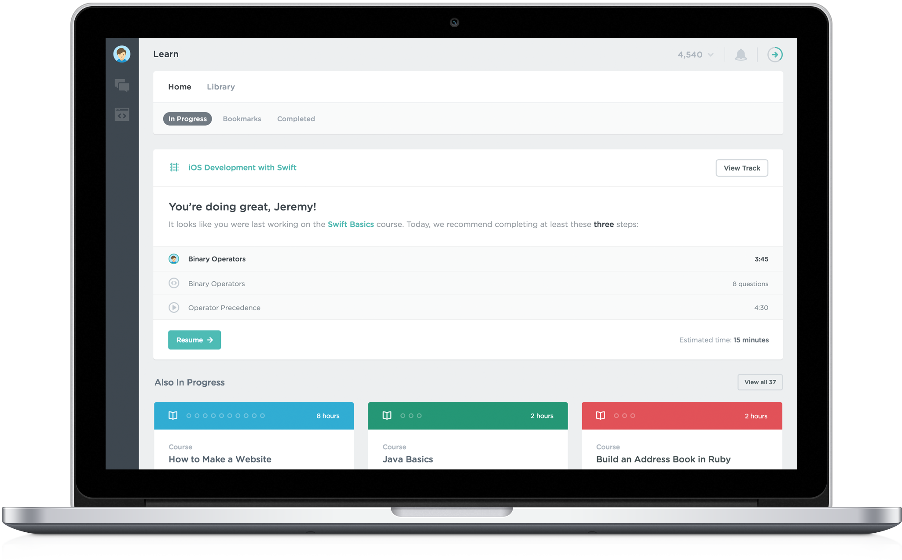
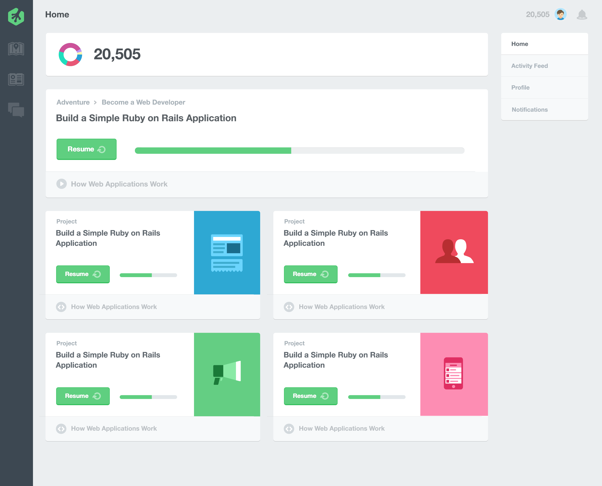
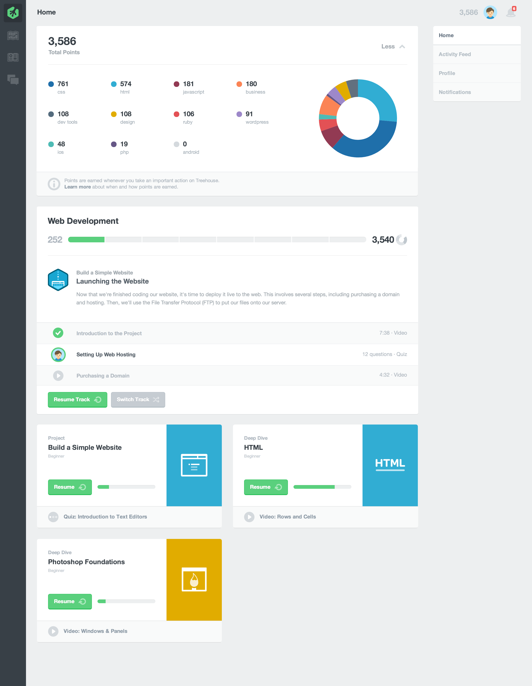
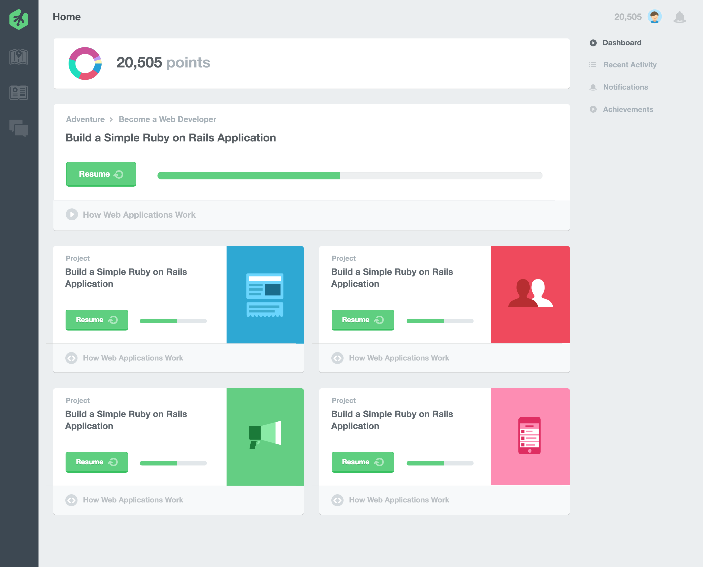
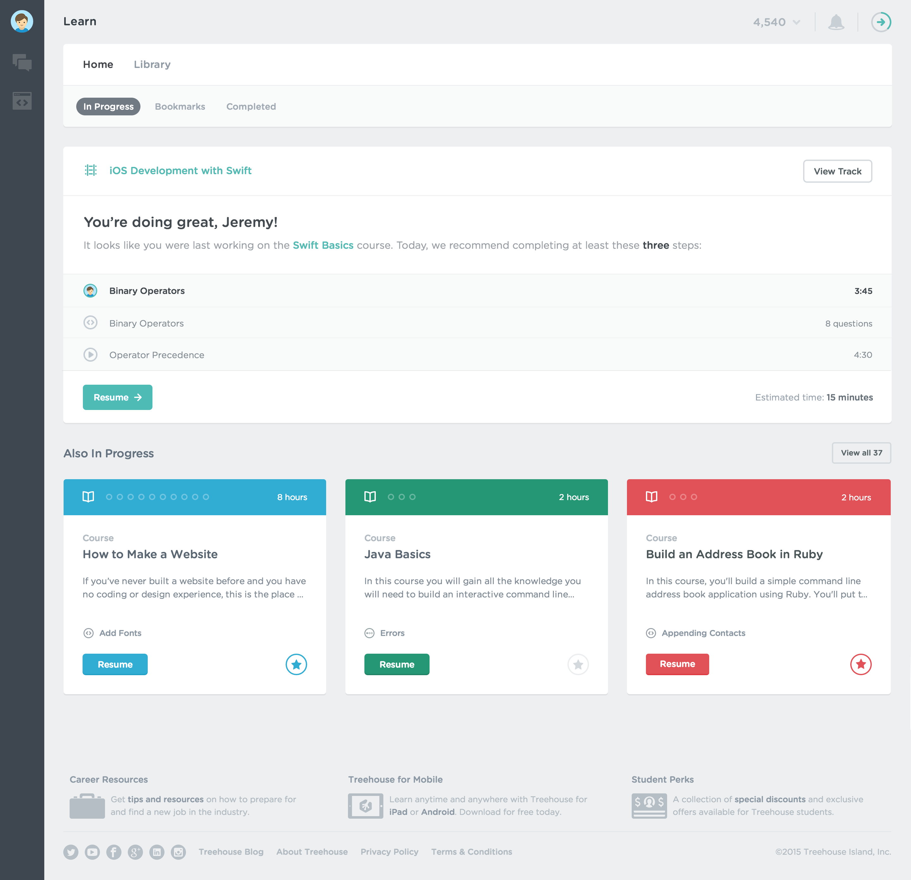

Treehouse Home
Overview
Home is the Treehouse student's learning control center where students can view and manage their in-progress content, as well as their bookmarked and completed content. Home also gives students content recommendations and encourages them to keep working towards their goals.
The final, production version of Home, showing a user monitoring their in-progress Track and other courses.
Original Concept
Orignally called "Dashboard," these were essentially just simple aggregators. There was no filtering, just a firehose of in-progress content. The original Home had no way to remove content without completing it, until we built a basic bookmarking system we so cleverly called "Add to Home." This allowed students to pin content to Home, but more importantly, to remove it. This visual language was also consistent across the Treehouse app at the time; bold and slightly cartoonish, it was heavy on visual impact but like any early iteration, the UX design needed time to mature.
A mockup of the original Home, renamed shortly after we introduced a new app design and visual language.
The second iteration of Home, which included an expanded points display and detailed Track panel.
Project Goals
The goals of the third major Home iteration was to make it more manageable. We wanted to remove the firehose, de-emphasize points as a primary measure of Treehouse progress, and introduce the new global card language, which also required the addition of Bookmarks and Completed content filters.
Home wasn't broken, but it wasn't necessarily prioritizing or explaining anything well either. Firehoses are always difficult to manage, and firehoses without filters are just dumb, especially for active students. Creating a more robust bookmarking system would allow us to ditch the firehose and show only the most relevant in-progress content at a glance. We also wanted to relegate points to a student's profile, as we no longer thought they were an accurate measure of actual knowledge. While the Track panel worked well, we thought it could have even more utility as a content recommendation/encouragement panel for both Track and non-Track students.
Project Exploration
Around this time, we became pretty big believers in contextual recommendations being the way forward for our students and began to explore ways we could begin integrating these across the product while we built a more robust recommendation engine. In this exploration, a first iteration of the content recommendation panel has been designed and I was experimenting with showing the next recommended piece of content immediately below the panel. The context for the recommendation is listed above the content.
In this mockup, Bookmarking was at the time called "Save to Home," hence the "Saved" filter.
Production
On production, students are still shown a recommendation panel at the top of Home with a reminder of what they were last working on, and encouragement to complete at least a few steps that day. If they have recently completed content, the panel recommends related content, drawing from your usage history as well as from your Bookmarks. If students have joined a Track, the next course in their Track will be recommended and their Track will be listed at the top of the panel. Up to three other in-progress content cards are shown by default, with a link added to show all in-progress content.
A more complete view of Home on production.